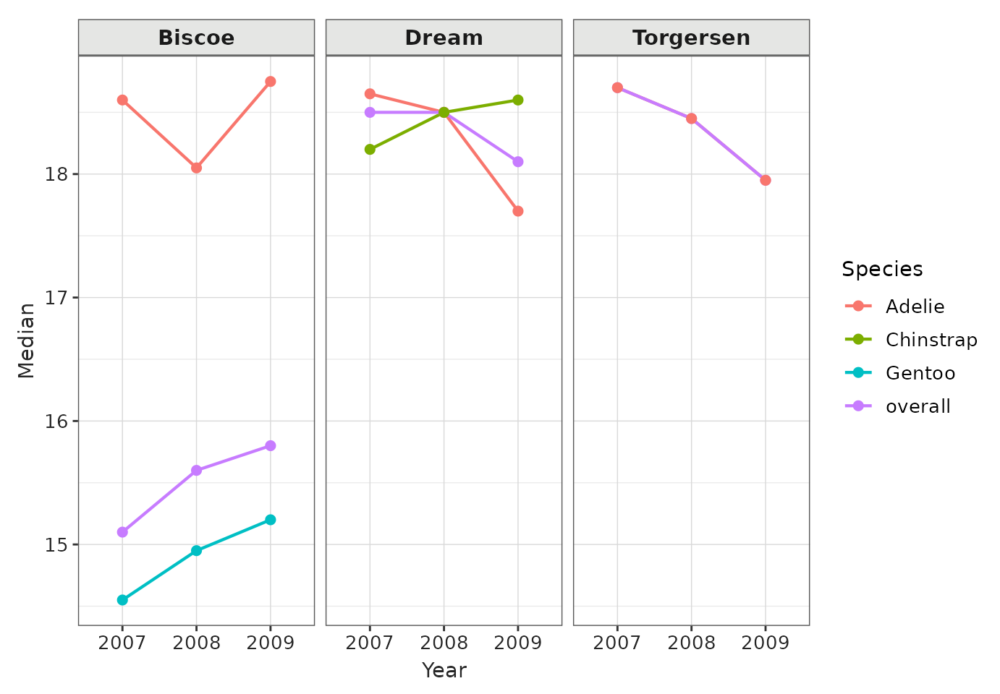
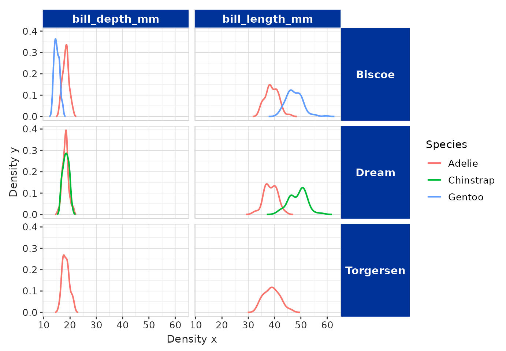
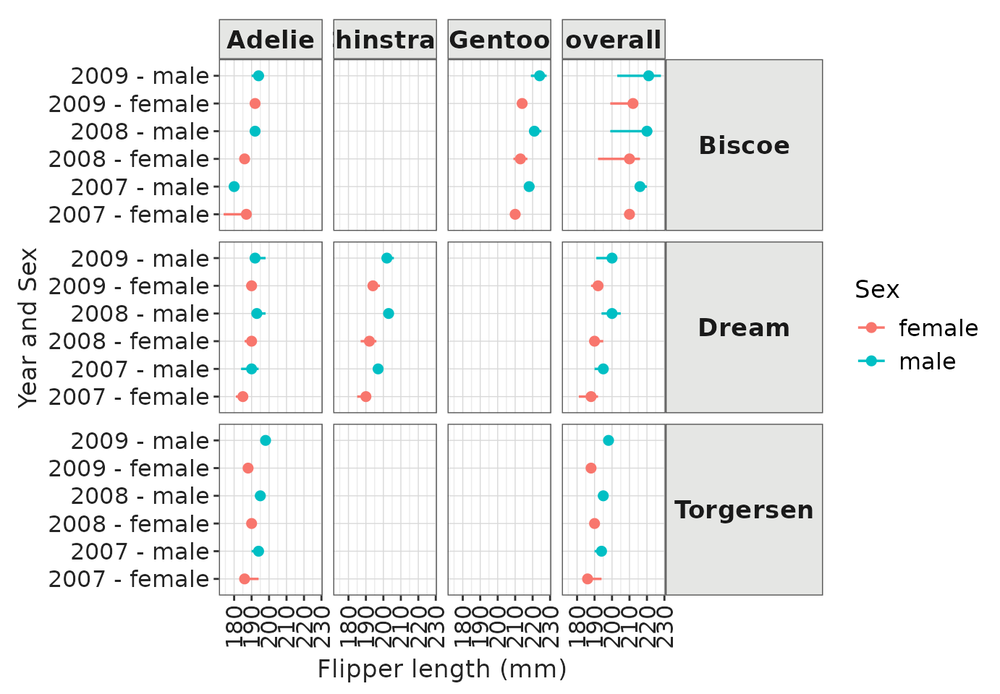
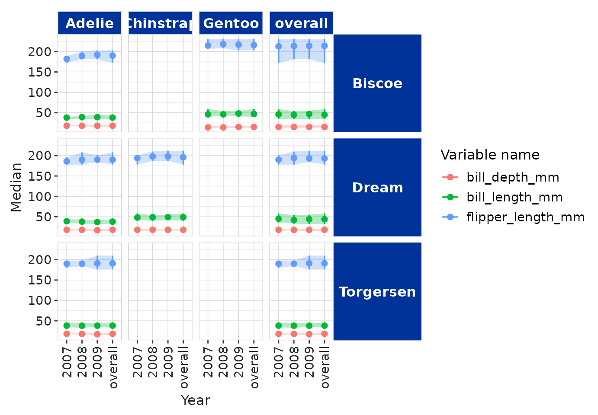
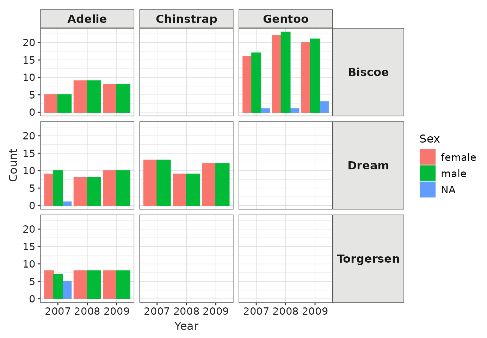
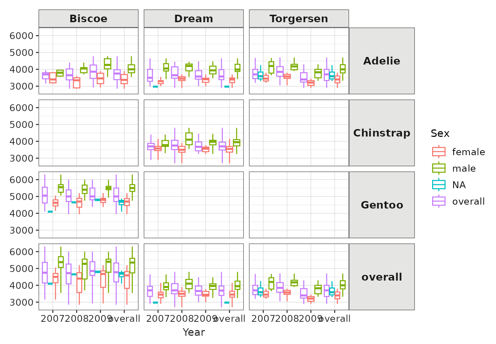
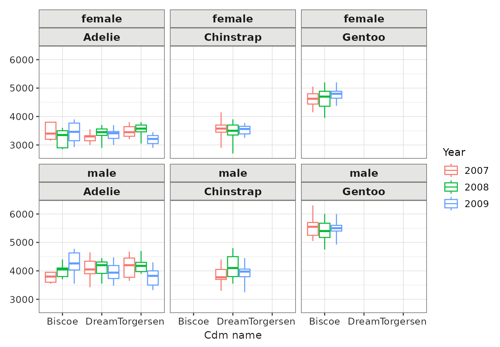
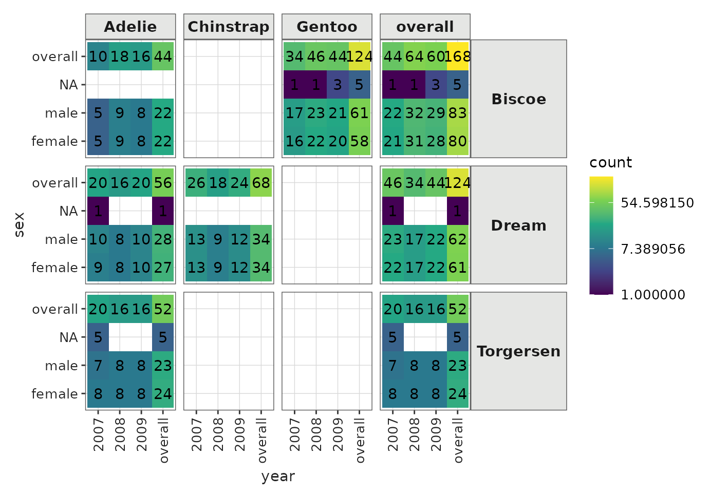
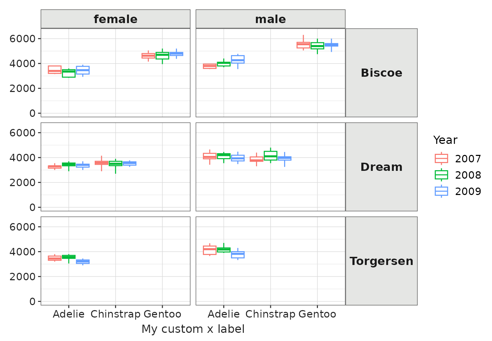

visOmopResults provides plotting tools that simplify
visualising data in <summarised_result> format while
also being compatible with other formats.
Plotting with a <summarised_result>
For this vignette, we will use the penguins dataset from
the palmerpenguins package. This dataset will be
summarised using the PatientProfiles::summariseResult()
function, which aggregates the data into the
<summarised_result> format:
library(PatientProfiles)
library(palmerpenguins)
library(dplyr)
summariseIsland <- function(island) {
penguins |>
filter(.data$island == .env$island) |>
summariseResult(
group = "species",
includeOverallGroup = TRUE,
strata = list("year", "sex", c("year", "sex")),
variables = c(
"bill_length_mm", "bill_depth_mm", "flipper_length_mm", "body_mass_g",
"sex"),
estimates = c(
"median", "q25", "q75", "min", "max", "count_missing", "count",
"percentage", "density")
) |>
suppressMessages() |>
mutate(cdm_name = island)
}
penguinsSummary <- bind(
summariseIsland("Torgersen"),
summariseIsland("Biscoe"),
summariseIsland("Dream")
)
penguinsSummary |> glimpse()
#> Rows: 429,296
#> Columns: 13
#> $ result_id <int> 1, 1, 1, 1, 1, 1, 1, 1, 1, 1, 1, 1, 1, 1, 1, 1, 1, 1,…
#> $ cdm_name <chr> "Torgersen", "Torgersen", "Torgersen", "Torgersen", "…
#> $ group_name <chr> "overall", "overall", "overall", "overall", "overall"…
#> $ group_level <chr> "overall", "overall", "overall", "overall", "overall"…
#> $ strata_name <chr> "overall", "overall", "overall", "overall", "overall"…
#> $ strata_level <chr> "overall", "overall", "overall", "overall", "overall"…
#> $ variable_name <chr> "number records", "bill_length_mm", "bill_length_mm",…
#> $ variable_level <chr> NA, NA, NA, NA, NA, NA, NA, "density_001", "density_0…
#> $ estimate_name <chr> "count", "median", "q25", "q75", "min", "max", "count…
#> $ estimate_type <chr> "integer", "numeric", "numeric", "numeric", "numeric"…
#> $ estimate_value <chr> "52", "38.9", "36.65", "41.1", "33.5", "46", "1", "29…
#> $ additional_name <chr> "overall", "overall", "overall", "overall", "overall"…
#> $ additional_level <chr> "overall", "overall", "overall", "overall", "overall"…Plotting principles for <summarised_result>
objects
1) Tidy Format
When working with <summarised_result> objects, the
data is internally converted into the tidy format before plotting. This
is an important distinction because columns such as
strata_name and strata_level from the original
<summarised_result> cannot be used directly with the
plotting functions. Instead, tidy columns should be referenced.
For more information about the tidy format, refer to the
omopgenerics package vignette on
<summarised_result> here.
To identify the available tidy columns, use the
tidyColumns() function:
tidyColumns(penguinsSummary)
#> [1] "cdm_name" "species" "year" "sex"
#> [5] "variable_name" "variable_level" "count" "median"
#> [9] "q25" "q75" "min" "max"
#> [13] "count_missing" "density_x" "density_y" "percentage"2) Subsetting Variables
Before calling the plotting functions, always subset the
<summarised_result> object to the variable of
interest. Avoid combining results from unrelated variables, as this may
lead to NA values in the tidy format, which can affect your plots.
Scatter plot
We can create simple scatter plots using the
plotScatter() let’s see some examples:
penguinsSummary |>
filter(variable_name == "bill_depth_mm") |>
filterStrata(year != "overall", sex == "overall") |>
scatterPlot(
x = "year",
y = "median",
line = TRUE,
point = TRUE,
ribbon = FALSE,
facet = "cdm_name",
colour = "species"
)
Additionally, we can use the function themeVisOmop() to
change the default ggplot2 style to our default style. Not
only that, but we can use standard ggplot2 functionalities to the
returned plot:
penguinsSummary |>
filter(variable_name %in% c("bill_length_mm", "bill_depth_mm"))|>
filterStrata(year == "overall", sex == "overall") |>
filterGroup(species != "overall") |>
scatterPlot(
x = "density_x",
y = "density_y",
line = TRUE,
point = FALSE,
ribbon = FALSE,
facet = cdm_name ~ variable_name,
colour = "species"
) +
themeVisOmop() +
ggplot2::facet_grid(cdm_name ~ variable_name, scales = "free_x") 
penguinsSummary |>
filter(variable_name == "flipper_length_mm") |>
filterStrata(year != "overall", sex %in% c("female", "male")) |>
scatterPlot(
x = c("year", "sex"),
y = "median",
ymin = "q25",
ymax = "q75",
line = FALSE,
point = TRUE,
ribbon = FALSE,
facet = cdm_name ~ species,
colour = "sex",
group = c("year", "sex")
) +
themeVisOmop() +
ggplot2::coord_flip() +
ggplot2::labs(y = "Flipper length (mm)") +
ggplot2::theme(axis.text.x = ggplot2::element_text(angle = 90, vjust = 0.5, hjust=1))
penguinsSummary |>
filter(
variable_name %in% c("flipper_length_mm", "bill_length_mm", "bill_depth_mm")
) |>
filterStrata(sex == "overall") |>
scatterPlot(
x = "year",
y = "median",
ymin = "min",
ymax = "max",
line = FALSE,
point = TRUE,
ribbon = TRUE,
facet = cdm_name ~ species,
colour = "variable_name",
group = c("variable_name")
) +
themeVisOmop(fontsizeRef = 12) +
ggplot2::theme(axis.text.x = ggplot2::element_text(angle = 90, vjust = 0.5, hjust=1))
Bar plot
Let’s create a bar plots:
penguinsSummary |>
filter(variable_name == "number records") |>
filterGroup(species != "overall") |>
filterStrata(sex != "overall", year != "overall") |>
barPlot(
x = "year",
y = "count",
colour = "sex",
facet = cdm_name ~ species
) +
themeVisOmop(fontsizeRef = 12)
Box plot
Let’s create some box plots of their body mass:
penguinsSummary |>
filter(variable_name == "body_mass_g") |>
boxPlot(x = "year", facet = species ~ cdm_name, colour = "sex") +
themeVisOmop()
penguinsSummary |>
filter(variable_name == "body_mass_g") |>
filterGroup(species != "overall") |>
filterStrata(sex %in% c("female", "male"), year != "overall") |>
boxPlot(x = "cdm_name", facet = c("sex", "species"), colour = "year") +
themeVisOmop(fontsizeRef = 11)
Note that as we didnt specify x there is no levels in the x axis, but box plots are produced anyway.
Plotting with a <data.frame>
Plotting functions can also be used with the usual
<data.frame>. In this case we will use the tidy
format of penguinsSummary.
penguinsTidy <- penguinsSummary |>
filter(!estimate_name %in% c("density_x", "density_y")) |> # remove density for simplicity
tidy()
penguinsTidy |> glimpse()
#> Rows: 720
#> Columns: 14
#> $ cdm_name <chr> "Torgersen", "Torgersen", "Torgersen", "Torgersen", "To…
#> $ species <chr> "overall", "overall", "overall", "overall", "overall", …
#> $ year <chr> "overall", "overall", "overall", "overall", "overall", …
#> $ sex <chr> "overall", "overall", "overall", "overall", "overall", …
#> $ variable_name <chr> "number records", "bill_length_mm", "bill_depth_mm", "f…
#> $ variable_level <chr> NA, NA, NA, NA, NA, "female", "male", NA, NA, NA, NA, N…
#> $ count <int> 52, NA, NA, NA, NA, 24, 23, 5, 20, 16, 16, NA, NA, NA, …
#> $ median <int> NA, 38, 18, 191, 3700, NA, NA, NA, NA, NA, NA, 38, 38, …
#> $ q25 <int> NA, 36, 17, 187, 3338, NA, NA, NA, NA, NA, NA, 37, 35, …
#> $ q75 <int> NA, 41, 19, 195, 4000, NA, NA, NA, NA, NA, NA, 39, 41, …
#> $ min <int> NA, 33, 15, 176, 2900, NA, NA, NA, NA, NA, NA, 34, 33, …
#> $ max <int> NA, 46, 21, 210, 4700, NA, NA, NA, NA, NA, NA, 46, 45, …
#> $ count_missing <int> NA, 1, 1, 1, 1, NA, NA, NA, NA, NA, NA, 1, 0, 0, 1, 0, …
#> $ percentage <dbl> NA, NA, NA, NA, NA, 46.153846, 44.230769, 9.615385, NA,…Using this tidy format, we can replicate plots. For instance, we recreate the previous example:
penguinsTidy |>
filter(
variable_name == "body_mass_g",
species != "overall",
sex %in% c("female", "male"),
year != "overall"
) |>
boxPlot(x = "cdm_name", facet = sex ~ species, colour = "year") +
themeVisOmop()
Custom plotting
The tidy format is very useful to apply any other custom ggplot2 function that we may be interested on:
library(ggplot2)
penguinsSummary |>
filter(variable_name == "number records") |>
tidy() |>
ggplot(aes(x = year, y = sex, fill = count, label = count)) +
themeVisOmop() +
geom_tile() +
scale_fill_viridis_c(trans = "log") +
geom_text() +
facet_grid(cdm_name ~ species) +
ggplot2::theme(axis.text.x = ggplot2::element_text(angle = 90, vjust = 0.5, hjust=1))
Combine with ggplot2
The plotting functions are a wrapper around the ggplot2 package,
outputs of the plotting functions can be later customised with ggplot2
and similar tools. For example we can use ggplot2::labs()
to change the labels and ggplot2::theme() to move the
location of the legend.
penguinsSummary |>
filter(
group_level != "overall",
strata_name == "year &&& sex",
!grepl("NA", strata_level),
variable_name == "body_mass_g") |>
boxPlot(x = "species", facet = cdm_name ~ sex, colour = "year") +
themeVisOmop(fontsizeRef = 12) +
ylim(c(0, 6500)) +
labs(x = "My custom x label")
You can also use ggplot2::ggsave() to later save one of
this plots into ‘.png’ file.
Combine with plotly
Although the package currently does not provide any plotly
functionality ggplots can be easily converted to
<plotly> ones using the function
plotly::ggplotly(). This can make the interactivity of some
plots better.